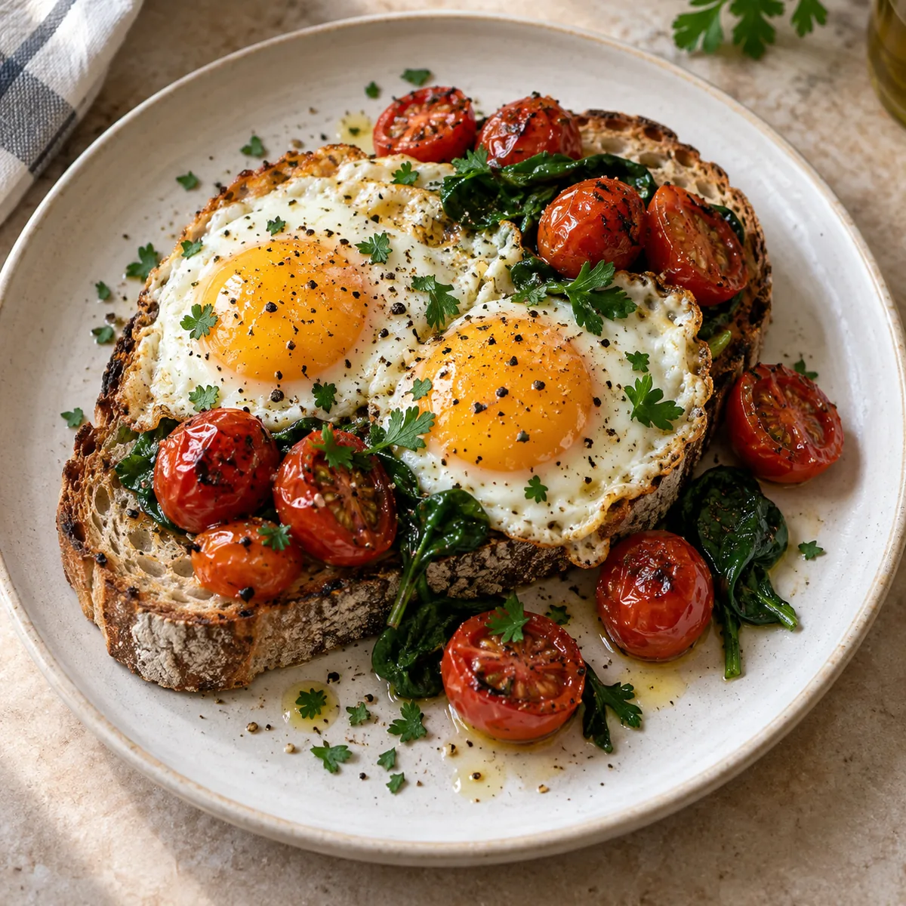
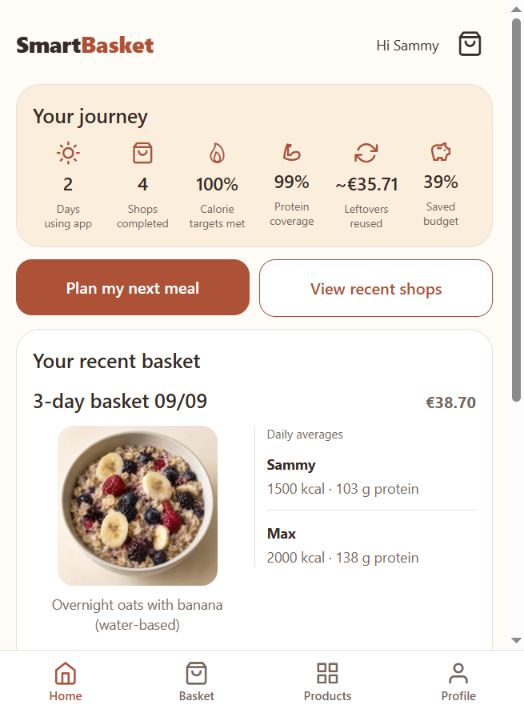
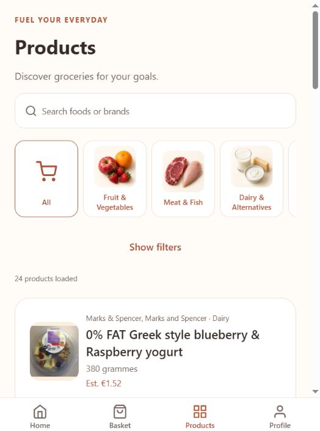
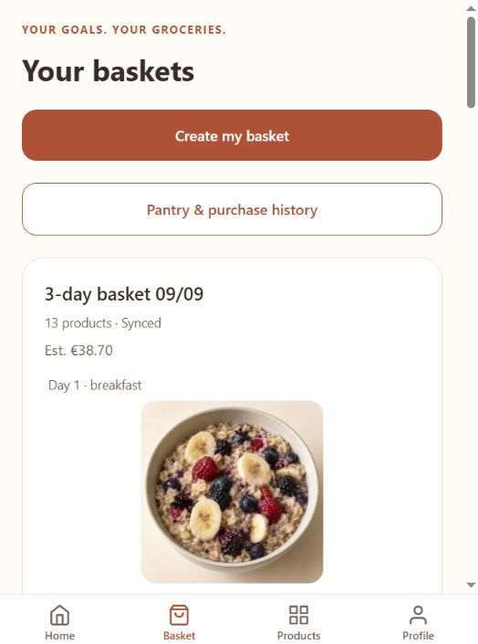

Plan for your people.
Set calorie and protein goals, dietary preferences and a budget. Review every meal of the day, breakfast and snacks included, and swap whatever doesn't suit you.
AI-driven meal planning that makes the grocery shop easier.
Tell it your goals and it works out the meals, the ingredients and the whole packages you actually need to buy.

Meals, nutrition and groceries belong in the same conversation.
Screens from the development app. Displayed nutrition and prices are estimates; the example figures are not promised results.



One connected flow, from choosing meals to organising the food you buy.
Set calorie and protein goals, dietary preferences and a budget. Review every meal of the day, breakfast and snacks included, and swap whatever doesn't suit you.
See the ingredients and package quantities for your plan. Browse the catalog to add extras, from a favourite snack to a bottle of juice.
Record your completed shop. Remaining quantities go into your pantry and can be used in later plans instead of buying them again.
Dinner together shouldn't mean identical portions.
SmartBasket shows calorie and protein estimates for each person, both per meal and as daily averages. You can plan together while keeping individual goals in view.
SmartBasket is an Android app in development, created by Samaana Zakharova.
View the project on GitHubSource code, build instructions and the latest Android build.